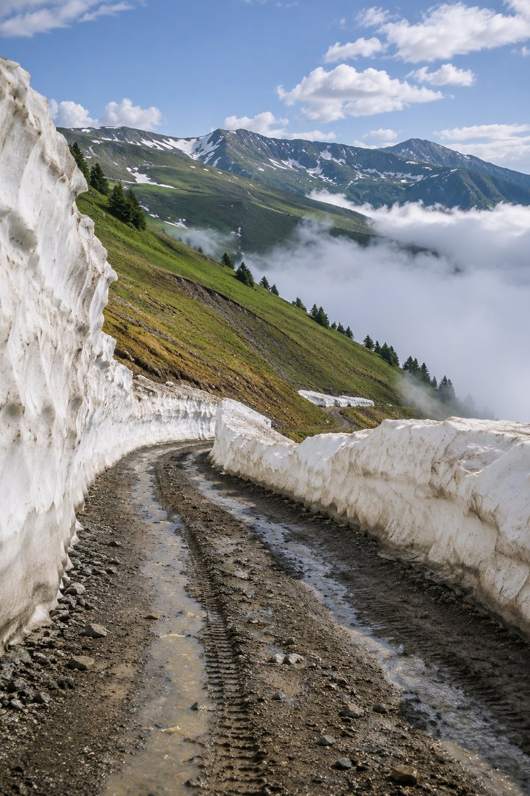

Отец Лукиане

Вторник, 16 марта — суббота, 20 марта 2027 года
Хатия ждала, что он пойдёт вверх.
Она так ясно это видела, что почти слышала шаги. Сейчас он отряхнёт пальто, посмотрит на склон, выберет, где ближе, и начнёт подниматься. Медленно, без спешки, как поднимаются люди, которые знают, что их ждут. Полчаса по осыпи. Потом он нагнётся у низкого входа.
Он не пошёл вверх. Он постоял, глядя на кельи, потом повернулся и пошёл вниз, к машинам.
Шёл он не быстро. Человек в светлой кепке как раз возвращался от тамариска, и они сошлись на полдороге. Хатия видела их маленькими, как фигурки на столе, и не слышала ни слова. Видела только руки. Человек в кепке показал вверх, на гребень, на кельи. Серый покачал головой. Он показал в другую сторону, на восток, туда, где старая дорога уходила за холмы, к Иори. Потом постучал пальцем по запястью, как показывают часы. Давно, мол. Ночью.
Человек в кепке долго смотрел на кельи. Хатия перестала дышать. Ей казалось, что он смотрит прямо в её окно, хотя окон в скале было сорок, а может, и сто.
Потом он пожал плечами и пошёл к чёрной машине.
Серый сел в свой джип и тронулся первым, на восток, быстро, с хвостом рыжей пыли. Чёрная машина подождала и пошла за ним. Белая «Тойота» осталась. Водитель с толстой шеей подогнал её ближе к балке и встал у самого тамариска. Вылез, обошёл «ниву» кругом, заглянул в окна. Потом сел обратно, открыл дверь, чтобы торчали ноги, и налил себе чего-то из термоса.
Хатия сидела на полу и не понимала.
Он их увёл. Он соврал им, это было видно даже отсюда. Он показал им пустую дорогу, и они поверили, потому что он всегда знает. Для этого они и ездили за ним всю зиму. Искать то, что ищет он.
Зачем? Чтобы прийти потом одному? Или чтобы не приходить совсем? Хатия не знала, что из этого хуже, и решила, что первое. Второе было бы слишком хорошо, а хорошему она сегодня не верила.
⁂
Маико встала первой.
Она сбросила одеяло, вытащила руки из-под мышек и, не показав ни одного знака, взяла Хатию за запястье. Так она взяла её в октябре на школьном крыльце, когда кофе пролился на ботинок. Крепко, по-взрослому. И потянула к выходу.
— Куда? — спросила Хатия.
Маико показала подбородком вверх. Не рукой. Подбородком, как показывают пастухи, когда руки заняты. За келью, за гребень.
— Сейчас? Днём? Он же внизу. — Хатия кивнула на окно, на «Тойоту». — Он нас увидит.
Маико не ответила. Она смотрела над Хатией, и лицо у неё было спокойное и сосредоточенное, как у Ламзиры, когда та считает сдачу. Потом опять потянула.
Хатия поняла. Девочка знала, когда водитель посмотрит наверх. Она знала это, как Хатия знала таблицу умножения.
Собирались быстро. Одеяло скатали и привязали к рюкзаку ремешком. Пустую банку из-под лобио Хатия хотела оставить, но Маико забрала её и сунула в рюкзак. Ложку она положила себе в карман пальто. Хатия подумала, что Ламзира бы одобрила.
Наверх из кельи вела узкая расщелина, по ней когда-то ходили монахи. Маико лезла первой, цепляясь за выступы. Хатия за ней, с рюкзаком, и сапоги Нукри скользили на каждом шаге. На середине Маико вдруг обернулась, схватила её за рукав и прижала к камню. Сама прижалась рядом, лицом в песчаник.
Хатия замерла. Через плечо, краем глаза, она видела далеко внизу «Тойоту». Водитель вышел, приложил ладонь козырьком ко лбу и стал смотреть на кельи. Смотрел он долго, ведя головой слева направо, как читают строчку. Потом опустил руку, зевнул и сел обратно.
Маико отпустила рукав. Полезли дальше.
⁂
Наверху дул ветер, ровный и холодный, и пахло полынью. По ту сторону гребня склон уходил вниз, рыжий, голый, в промоинах, а дальше лежала белёсая равнина без единой крыши. Туда Хатия смотреть не стала. Маико повела её вдоль гребня, чуть ниже самого верха, так, чтобы из долины их не было видно.
Шли долго. Хатия потом не могла сказать, сколько. Солнце поднялось и стало греть спину, ветер не стихал. Под ногами крошился песчаник, иногда попадались кусты, колючие и серые, и Маико обходила их, не глядя. Один раз над ними прошёл гриф, так низко, что Хатия увидела его голую шею и белый воротник. Он посмотрел на них сверху с явным интересом и полетел дальше, видимо, решив, что они ещё живые.
— Рано тебе, — сказала ему Хатия. — Подожди.
Маико её не слышала. Она шла впереди, засунув руки в карманы пальто, и это было хуже всего. Раньше она всё время что-то показывала. «Смотри», «птица», «холодно», «хорошо». Теперь руки жили в карманах. Вынимала она их, только чтобы взять Хатию за запястье и придержать или потянуть в сторону. Один раз она остановилась перед обрывом, и правая рука у неё сама поднялась. Хатия увидела начало знака, «смотри» или «там». Маико поймала эту руку левой, как ловят чужую, и затолкала обратно в карман.
Хатия отвернулась. Она смотрела на равнину внизу, на которую решила не смотреть, и считала до двадцати.
Воды было полбутылки. Они пили по очереди на привале у большого камня. Маико держала бутылку двумя руками, а потом опять спрятала их. Хатия отломила ей хлеба, последний кусок. Маико взяла его, откусила и протянула обратно половину.
— Ешь сама, — сказала Хатия.
Маико держала хлеб и ждала. Хатия взяла.
⁂
Лавру они увидели сверху, в начале третьего.
Сначала Хатия узнала стены с круглыми башнями, потом крыши, потом стоянку. На стоянке стоял один туристический автобус и две легковые. Серого джипа не было. Хатия смотрела на стоянку так долго, что Маико потянула её за рукав.
Вниз вела тропа, где-то вырубленная ступенями, где-то просто протоптанная. Маико повела её не к воротам, а в сторону, мимо стены, туда, где на склоне под лаврой стояли в ряд синие и белые ящики. Ульи. Между ними ходил человек в подряснике, подоткнутом за пояс, в резиновых сапогах и в сетке на лице. Он поднимал крышки и заглядывал внутрь, неторопливо, как хозяйка заглядывает в кастрюли.
Хатия остановилась в десяти шагах. Маико остановилась рядом.
Человек опустил крышку, поднял сетку и посмотрел на них. Глаза у него были светлые и весёлые, только сейчас весёлого в них было немного.
— Мёда нет, — сказал отец Лукиане. — Они его за зиму сами съели. Есть хлеб.
— Нас ищут, — сказала Хатия.
Она не собиралась начинать с этого. Она собиралась поздороваться, извиниться, объяснить. Но вышло так.
— Кто?
— Все.
Монах кивнул, будто это был обычный ответ. Он посмотрел на Маико, на её руки в карманах, на подсохшую рыжую грязь на коленях. Потом посмотрел на Хатию, на её лицо. Хатия не знала, что там видно. Наверное, всё.
— Пойдёмте, — сказал он. — Только не через ворота. Там сегодня школьники из Тбилиси, два класса. Учительница у них кричит, как чайка, я с утра у ульев прячусь.
⁂
Он провёл их через маленькую калитку в стене, которую Хатия в прошлый раз не заметила. Потом по каменной лестнице вверх, мимо двора, где сушилось на верёвке чёрное бельё, к двери в скале. Дверь была старая, из толстых досок, потемневших почти до черноты. Изнутри на ней был деревянный засов.
За дверью оказалась келья, побольше той, на гребне. В ней пахло воском и дымом. Вдоль стены стояли пустые рамки для сот, стопкой, и ящик с какими-то инструментами. На полу лежали два тюфяка, свёрнутые, и войлок. В углу — кувшин.
— Тут у нас пчелиное хозяйство зимует, — сказал отец Лукиане. — Рамки, дымарь, всё такое. Пчёлам не обидно, они ещё спят. Тюфяки чистые, войлок тоже. Воду я принесу.
Хатия смотрела на засов.
— Засов изнутри, — сказал монах, проследив её взгляд. — Снаружи у нас засовов нет. Это не тюрьма, это келья.
— А если придут?
— Если придут с бумагой, открою, — сказал он просто. — Монастырь не крепость, а я не сторож. Если придут без бумаги, тоже открою. Но сначала спрошу, чего хотят. Я медленно спрашиваю. Меня в Сагареджо на почте не любят за это.
Хатия засмеялась. Это получилось неожиданно для неё самой, коротко и нервно. Монах посмотрел на неё с удовольствием, как смотрят на тесто, которое поднялось.
— Вот, — сказал он. — Уже лучше.
⁂
Вечером он принёс суп. Чечевичный, густой, в закопчённой кастрюльке, и хлеб, и банку маринованной джонджоли.
— Пост, — сказал он, ставя кастрюльку на ящик. — Второй день. Сыра не дам, у самих нет. Девочке, правда, можно и сыр, ей пост не положен. Но сыра всё равно нет.
Маико ела, держа ложку в правой руке. Левая лежала у неё на коленях, сжатая в кулак. Монах сидел на рамках у двери и смотрел на эту левую руку. Потом на правую, которая каждый раз после ложки быстро уходила под мышку.
— Что у неё с руками? — спросил он у Хатии. — Замёрзли?
Хатия хотела сказать «да». Это было бы проще всего. Она посмотрела на Маико, которая ела суп и глядела в кастрюльку, и не смогла.
— Это я, — сказала она.
И рассказала. Про дверь. Про знаки во сне. Про серый джип под холмами и про то, как девочка показала ей: «я», «руки», «дверь», «вошёл». Про утро, про свои руки на маленьких руках и про «не надо». Про лицо Маико. Рассказывала она тихо, по-грузински, глядя в пол, и знала, что Маико не слышит ни слова. Это почему-то не помогало.
Монах слушал. Когда Хатия замолчала, он не сразу заговорил. Он встал, подошёл к двери и постучал по ней костяшками пальцев. Звук был глухой, тяжёлый.
— Дверь, говорите, — сказал он. — Вот дверь. Я её сам навешивал, двадцать лет назад, когда был ещё послушником. Петли привёз из Сагареджо, на автобусе, в рюкзаке. Тяжёлые, весь автобус на меня смотрел. — Он погладил доски ладонью. — Скажите мне, она виновата, что в неё стучат?
— Нет.
— А если её заложить камнем, что будет?
— Стена.
— Стена, — согласился он. — В келье без двери жить можно. Бывали затворники, которые закладывали вход и оставляли окошко для хлеба. Только они это сами решали, в старости, после долгой жизни. А не в девять лет, потому что учительница испугалась.
Хатия покраснела. Она это почувствовала, щёки стали горячие, как в школе у доски.
— Дверь — это не дыра в стене, — сказал отец Лукиане. — Дверь — это кто стучит. И кто открывает. А засов изнутри. Я вам в феврале одну вещь сказал, помните? Про сердце.
— «Слушаешь чужое сердце, береги своё», — сказала Хатия. — Помню. Вы сказали, когда она дорастёт до такого знака. Я сказала, что такого знака нет.
— А я сказал, придумаете. Придумали?
— Нет, — сказала Хатия. — Не успела. Не до того было.
Она замолчала, потому что вспомнила. «Нива», сосны, поворот после Цхнети. Маико на заднем сиденье, которая только что сказала «бабушка», «папа», «вопрос». И потом вдруг положила ладонь себе на грудь, плашмя, и повернула её. Медленно, как поворачивают ключ в замке. Хатия тогда не поняла и забыла. Было не до того.
— Покажите, — сказал монах, глядя на её лицо.
Хатия положила ладонь себе на грудь и повернула.
Отец Лукиане смотрел на её руку долго. Потом улыбнулся, и морщинки у глаз собрались в пучки.
— Ну вот, — сказал он. — А вы говорите, нет такого знака.
— Это не я. Это она. В машине. После того дома.
— Значит, ей там было что запирать, — сказал монах. — Она раньше вас поняла. Дети вообще многое понимают раньше нас, только объяснить не могут. А мы можем объяснить и ничего не понимаем.
— Но как? — спросила Хатия. — Как она будет запирать? Он же слышит. Даже во сне.
— Не знаю, — честно сказал отец Лукиане. — Я сорок лет этому учусь, и получается плохо. Обычно такому учит тот, кто сам обжёгся. Может, найдётся кто-нибудь. — Он взял пустую кастрюльку. — Только вы ей не отнимайте ключ вместе с дверью. Это я вам точно скажу, хоть я и монах, а не учитель.
Он ушёл. Хатия слышала, как он идёт вниз по лестнице, и как гремит крышка кастрюльки, и как он кому-то говорит внизу «да, да, иду».
⁂
Маико сидела на стопке рамок у двери, там, где только что сидел монах. Руки опять были под мышками. Она смотрела на Хатию так же, как утром, через стекло.
Хатия встала на колени на войлок, чтобы быть с ней одного роста.
Она хотела попросить прощения и не знала как. Этого знака они не учили. В классе никто ни у кого не просил прощения руками. Цотне извинялся вслух, когда его заставляли, а Гванца не извинялась никогда, потому что всегда была права. В видеословаре он, наверное, был. Телефон лежал в рюкзаке, и связи здесь не было.
Хатия показала «я». Потом сложила свои ладони вместе и прижала их к коленям, как утром прижимала руки Маико. И показала «нет». Получилось неправильно и некрасиво, как предложение, в котором перепутан порядок слов. Она это знала и всё равно показала ещё раз.
Потом осторожно взяла Маико за локоть. Подождала. Маико не отдёрнулась. Хатия вытащила её руку из-под мышки, медленно, как вынимают из воды что-то, что может порезать. Потом вторую. Развернула обе ладонями вверх и положила себе на ладони. Руки у Маико были тёплые и немного липкие от джонджоли.
И пошевелила своими пальцами под её ладонями. Руки, которые говорят.
— Говори, — сказала она вслух. — Пожалуйста. Говори.
Маико смотрела на неё. Долго. Хатия видела, как у неё двигаются глаза, чуть выше её лица, и думала, что там сейчас видно. Наверное, всё. Обе половины яблока. Страх, никуда не девшийся. Стыд. И что-нибудь ещё, чего Хатия сама про себя не знала.
Потом Маико высвободила одну руку. Взяла Хатию за запястье, как берут, когда поправляют. Подняла её руку, сложенную для «нет», разжала ей пальцы и положила ладонь Хатии ей же на грудь. Плашмя. И повернула, как ключ.
Хатия сидела, не шевелясь, и чувствовала под ладонью своё сердце. Оно стучало быстро, как после подъёма.
Маико поправила ей локоть, чтобы было правильно. Так она поправляла её всю зиму, терпеливо, по сто раз. Потом отпустила, откинулась назад и показала знак Хатии, мелом в воздухе. Потом «дом». Потом ключ, у себя на груди. И улыбнулась. Не всем лицом, как у стены лавры, а уголком рта, осторожно, как пробуют воду ногой.
Хатия подумала, что где-то за холмами он сейчас это видит. Её имя, мелом в воздухе. «Дом». Ключ.
«Пусть, — подумала она. — Пусть стучит».
⁂
Ночью пальцы у Маико опять шевелились. Хатия лежала на соседнем тюфяке и смотрела на них при свете маленькой лампы, которую оставил монах. «Мама». «Бабушка». «Лошадь». Один раз — ключ, неловко, во сне, мимо груди.
Хатия не стала класть на них ладонь. Это было трудно. Рука сама тянулась, как тянется к ребёнку, который во сне раскрылся. Она убрала руку под щёку и так и лежала. Потом, сама не заметив когда, уснула. В первый раз за три ночи.
Утром отец Лукиане принёс горячей воды и хлеба. Он поставил кувшин, задержался у двери и сказал, глядя на засов:
— Ночью у нас на нижней стоянке машина стояла. Большая, серая. Я в пять пошёл к ульям, смотрю — стоит. Человек в ней сидит, не спит. Смотрит на стену. Я ему кивнул. Он мне кивнул. Вежливый.
Хатия держала хлеб и не могла его откусить.
— Я хотел спросить, не надо ли чего, — сказал монах. — А он уже уехал. Как будто знал, что я спрошу.
— Он и знал, — сказала Хатия.
Отец Лукиане посмотрел на неё внимательно.
— Это тот, про которого вы мне в феврале не рассказали?
— Да.
— Ну, — сказал он, подумав. — Он не пришёл. Сидел и уехал. Давайте пока будем считать это за хорошее. Плохое мы всегда успеем посчитать.
⁂
Серая машина стояла внизу ещё раз, в ночь на пятницу. Монах сказал об этом между делом, как говорят о погоде. Человек опять сидел и не спал, опять уехал до рассвета. Никто не поднялся по лестнице. Никто не постучал.
Днём Маико помогала у ульев. Отец Лукиане выдал ей сетку, слишком большую, и она подвернула её, как подворачивают рукава. Пчёлы просыпались, вылетали на солнце, тяжёлые и сонные, и садились ей на пальто. Маико их не боялась. Она носила за монахом рамки, а он объяснял ей что-то по-грузински, медленно и подробно, хотя знал, что она не слышит. Хатия спросила зачем.
— Привычка, — сказал он. — Пчёлам я тоже объясняю. Они, правда, тоже не слушают.
К четвергу Маико научила его одному знаку. «Тихо». Он показывал его неуклюже, растопыривая пальцы, и Маико каждый раз их ему складывала. Вечером Хатия видела, как он показывает этот знак другому монаху, молодому, рыжему, во дворе у верёвки с бельём. Молодой смотрел на его руки с недоумением. Отец Лукиане сказал ему что-то и пошёл дальше, довольный.
— Что вы ему сказали? — спросила потом Хатия.
— Сказал, что выучил первое слово на новом языке. И что мне больше и не надо.
Маико снова говорила. Не так, как раньше, без остановки, а с паузами. Иногда посреди знака она останавливалась, клала ладонь на грудь и поворачивала. И только потом договаривала. Хатия не знала, помогает ли это. Она не знала, что слышит тот, в серой машине. Но она видела, что Маико это делает сама, никто её не просил. Как она сама придумала «там, где не видно» и «вошёл».
⁂
В субботу приехала Ламзира.
Её привёз Джансуг, на своей «ниве» цвета хаки, к обеду. Ламзира была в праздничном платке и с сумкой, в которой, как выяснилось, лежали хачапури, сыр, банка аджики, две пары шерстяных носков и коробок со сванской солью. Монаху она сказала, что приехала поставить свечу за Нукри. Свечу она действительно поставила, а потом поднялась по лестнице прямо к их двери, как будто всю жизнь здесь ходила.
— Пост же, — сказала Хатия, глядя на хачапури.
— Я пощусь с понедельника, — сказала Ламзира. — А ты нет. Тебе можно, ты в бегах. В бегах всем можно.
Она обняла Маико, долго, и Маико ей что-то показала руками. Ламзира ответила своими, «по-человечески», как она умела, и обе остались довольны.
Новости Ламзира выкладывала по одной, как вынимала из сумки продукты.
Во вторник в школу приходили из полиции, двое, вежливые. Спрашивали учительницу Алханашвили. Нестан сказала, что учительница Алханашвили в отпуске по семейным обстоятельствам, заявление у неё на столе: Хатия ей звонила в понедельник вечером.
— Я ей не звонила, — сказала Хатия.
— Вот и я так подумала, — сказала Ламзира. — Я Нестан потом спросила. Она сказала: сорок лет не врала, на старость можно один раз. И чтобы ты, когда вернёшься, заявление подписала. Она его сама написала, твоим почерком не получилось, написала своим.
Во вторник вечером белая «Тойота» остановилась у Ламзириной калитки. Водитель не вышел, только опустил стекло. Сказал: «Ваша машина за старой кошарой, в балке. Её никто не трогал. Переднее левое спускает, я подкачал». И уехал.
— Я его чаем поила, — сказала Ламзира с удовлетворением. — Видишь? Чай работает. Джансуг в среду её пригнал. Говорит, вторая передача его не слушается. Только тебя.
— Я ей сказал «пожалуйста», — сказал Джансуг из-за двери, где он стоял, не решаясь войти в келью. — Три раза. Она не стала.
Чёрная машина два дня ездила по кошарам вдоль Иори. Спрашивала у тушин, не видели ли девочку и учительницу на белой «ниве». Тушины не видели. Родня Бачо с синей дверью сказала, что видела волка. Чёрная машина уехала в Тбилиси.
Бачо в понедельник ездил ещё раз в Сагареджо. Подпись Тамты будут проверять, сказали ему. Пусть мать приедет сама. Темур ходит за Бачо, как собака за хозяином, который её побил. Бачо с ним не разговаривает, но и не гонит.
— А Тамта?
— Звонила Мзаго, — Ламзира вздохнула. — Плакала. Дочь синьора в Милане, раньше конца апреля приехать не может, у неё там своё. Без неё синьора не на кого оставить. Тамта говорит, найдёт кого-нибудь. Мзаго говорит, найдёт. — Ламзира помолчала. — Мзаго тебе велела передать. Чтобы ты йох кормила. И чтобы сама ела. Именно в таком порядке.
⁂
Ламзира уехала, когда солнце коснулось гребня. Перед уходом она постояла с отцом Лукиане у калитки, и Хатия видела сверху, как они разговаривают. Ламзира говорила много, монах кивал. Потом она сунула ему в руки что-то, завёрнутое в газету. Он посмотрел, засмеялся и перекрестил её.
— Что она вам дала? — спросила Хатия вечером.
— Сыр, — сказал отец Лукиане. — Сказала, для девочки. И чтобы я сам не ел, потому что пост. Сванка. Она меня знает пять минут и уже командует.
Ночью Хатия проснулась от того, что было холодно. Лампа догорела. В окне стояла луна, почти полная, и в келье было светло, как в комнате с телевизором.
Маико не спала.
Она сидела у окна, закутанная в войлок, и смотрела на северо-запад. Туда, где за холмами было зарево. Хатия приподнялась на локте.
— Не спится? — спросила она шёпотом и показала «спать» и «вопрос».
Маико обернулась. Показала «много». И на северо-запад. Потом подумала и прижала ладони к вискам, как Мзаго, когда у неё болит голова.
Хатия не знала, что на это ответить. Она смотрела, как девочка снова поворачивается к окну, кладёт ладонь на грудь и поворачивает её. Медленно. Потом ещё раз. И ещё. Как пробуют ключ в двери, которую ещё не научились запирать.